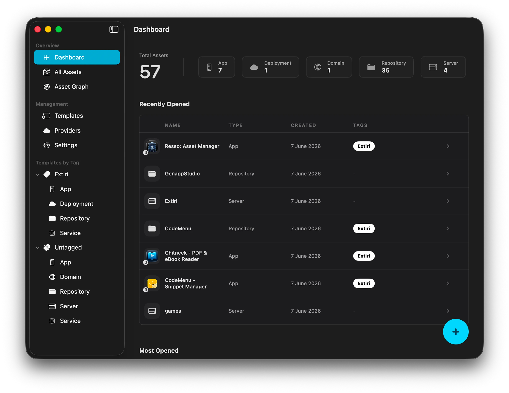
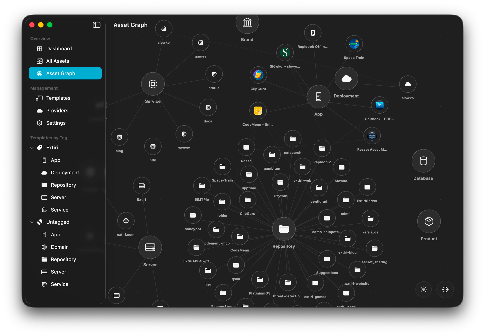
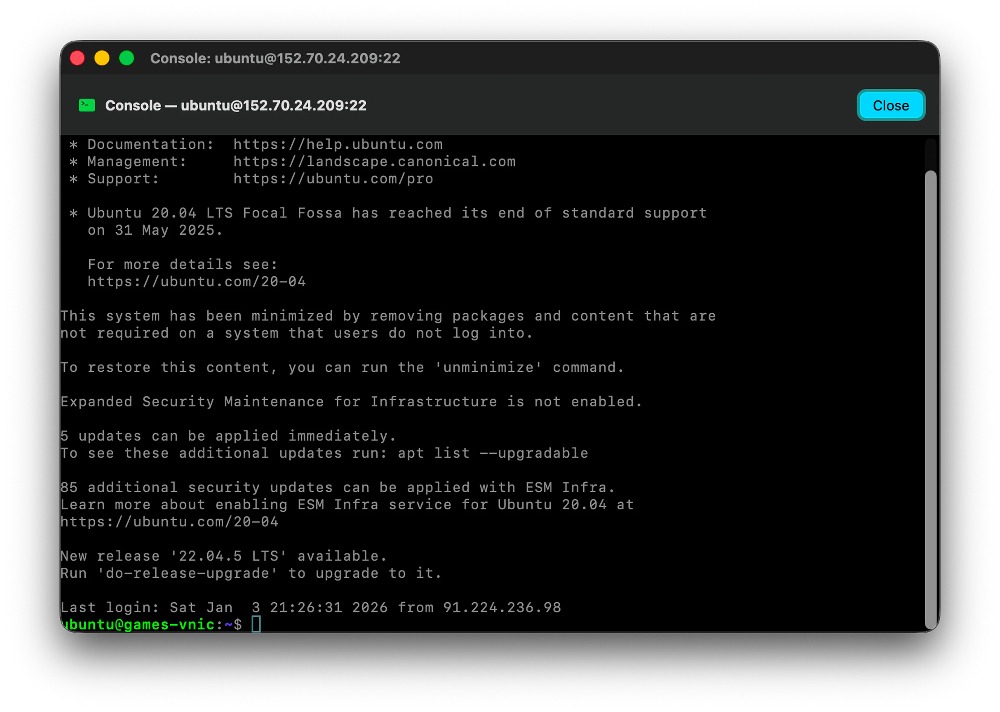
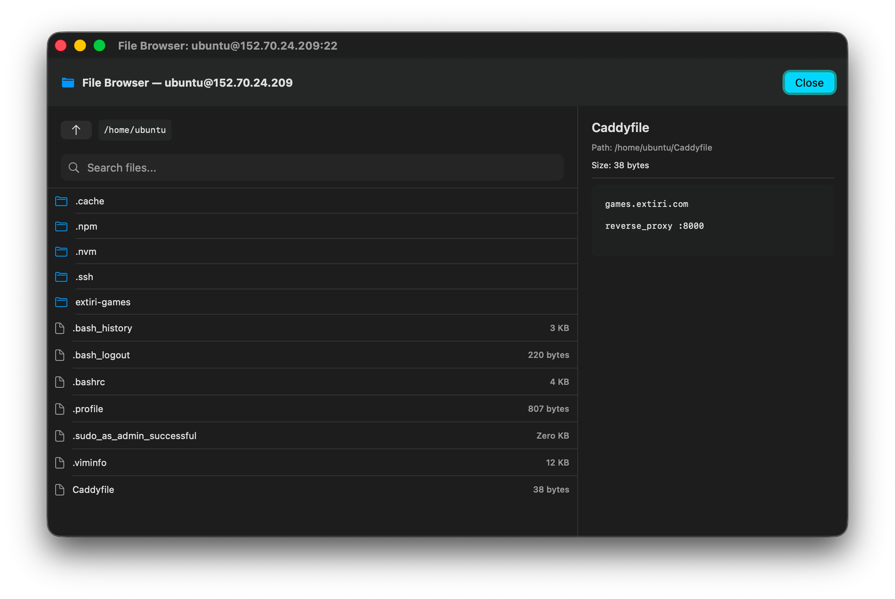
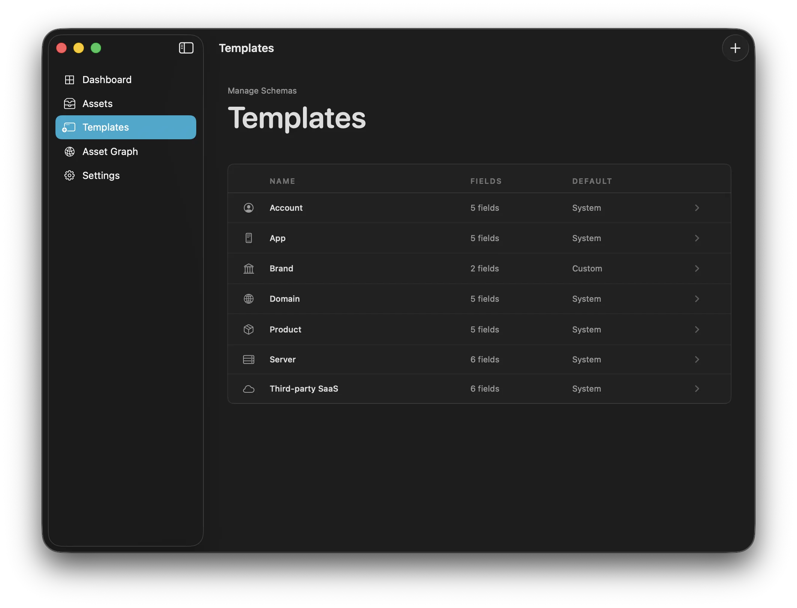
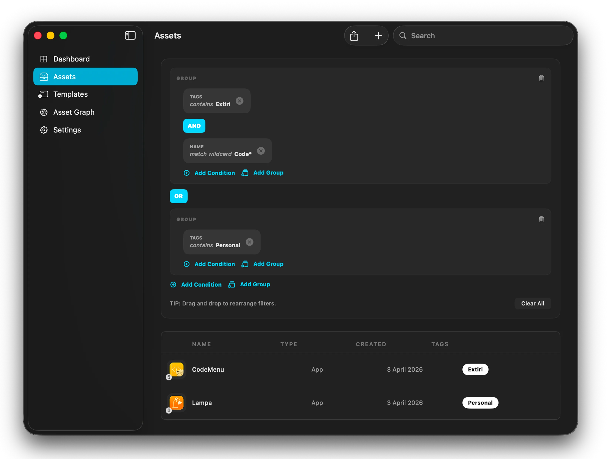
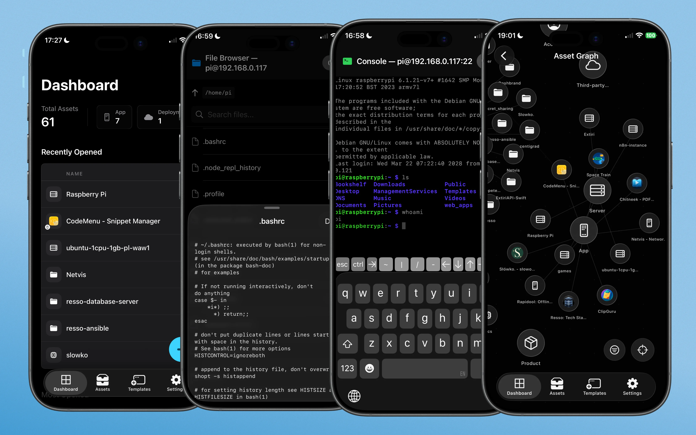

Find the right record first.
Keep IP addresses, deployment URLs, registrars, and account details together. Group assets by project, provider, tags, or lifecycle so you can get back to the right record quickly.

Put your apps, servers, domains, and accounts on one map. See what depends on what, find the details you need, and open connections to servers, databases, and storage from the same workspace.

You’re moving a VPS. Before you touch DNS, find the routes into that server and the services it uses. Select an asset to follow one example.
Open the project, find the right machine, and get to work with the context still in front of you.
Keep IP addresses, deployment URLs, registrars, and account details together. Group assets by project, provider, tags, or lifecycle so you can get back to the right record quickly.

Open a server shell over SSH, find a config file over SFTP, or open a SQLite or PostgreSQL database. Resso also supports connections to S3 buckets and NFS shares.


Keep domain renewals and expiring certificates in view on the dashboard, where you can check what needs attention before it interrupts a project.
Document the pieces you’d need to hand over, recover a service, or pick up a project after six months away.
Use templates to capture the details you’ll look for later, then combine filters across values, dates, and relationships to narrow a large inventory.


Keep your personal inventory local, or point Resso at a remote database when teammates need the same asset records and relationships. Use another Resso app, a compatible API, or the official self-hosted server.
See the database serverSync assets from the services you already use. Let scripts, playbooks, and assistants query the same inventory when they need infrastructure context.
 App Store
App Store
 Vercel
Vercel
 Google Cloud
Google Cloud
 GitHub
GitHub
 Cloudflare
Cloudflare
ressoc CLIressoc mcp.Find a deployment, check the graph, or open an SSH session from your iPhone. iCloud can keep your personal inventory in sync with your Mac.
Get Resso for iPhone
Add an app, its domain, and the server it runs on. Connect the three in Resso and see how quickly you can answer what runs where.
Try Resso freeYes. You can try Resso for 14 days through the App Store.
Infrastructure inventory is the process of mapping and documenting the hardware, software, network configurations, and services that make up an environment. Resso makes that inventory visual, searchable, and relationship-aware.
Yes. Resso connects to providers like Oracle Cloud, Google Cloud, and other provider data sources to sync cloud assets into a unified asset manager.
Yes. You can track domain registrars, DNS records, SSL certificates, and renewal dates.
Yes. Resso lets you document server IPs, providers, and SSH credentials, then use the built-in terminal and SFTP browser for direct server work.
Resso supports SSH, SFTP, SQLite, PostgreSQL, S3, and NFS.
Yes. Custom asset types let you define note formats, relationships, tags, files, encrypted files, and raw notes for the way your projects are architected.
Yes. Resso is built as a local workspace and supports iCloud sync across macOS and iOS.